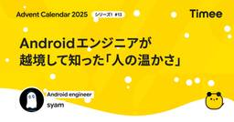
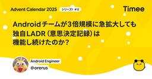
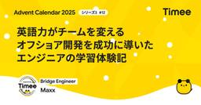
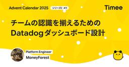
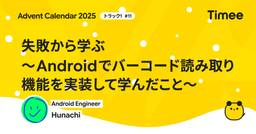
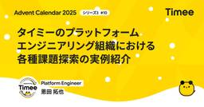
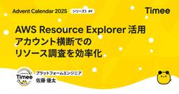
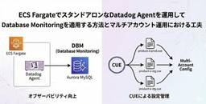
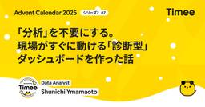
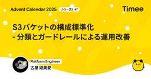

Timee Product Team Blog
https://tech.timee.co.jp/
タイミー開発者ブログ
フィード

Androidエンジニアが越境して知った「人の温かさ」
Timee Product Team Blog
こんにちは。日々プロダクト開発を楽しんでいるsyamです。 「AIがあれば、専門外の領域も一人でなんとかなるのでは」 そんな期待を持って、Androidエンジニアの私はWebフロントとバックエンド開発への越境に挑戦しました。結論から言うと、その期待は半分正解で、半分間違いでした。 この記事では、実際に越境してみて感じた「AIの限界」と、それを乗り越えるために必要だった「人の存在」について書いていきます。 AndroidからWebフロントへの越境は、比較的スムーズでした。 学生時代にWebフロントを触っていた経験があったことに加え、UIを組み立てる感覚や状態管理の考え方など、Androidと共通…
15時間前

Androidチームが3倍規模に急拡大しても独自LADR（意思決定記録）は機能し続けたのか？
Timee Product Team Blog
この記事はTimee Product Advent Calendar 2025の12日目の記事です。 1. はじめに こんにちは、タイミーでAndroidエンジニアをしている村田（@orerus）です。 私は2年前の2023年のアドベントカレンダーで、「Lightweight Architecture Decision Recordsの導入」という記事を書きました。 当時はAndroidエンジニアの人数も少なく、少人数だからこそ導入しやすかった実験的な施策でしたが、あれから2年が経ち、メンバー数は約3倍にまで急拡大しました。 一般的に、少人数チームで機能していた「全員合意」や「ドキュメント運用…
2日前

英語力がチームを変える：オフショア開発を成功に導いたエンジニアの学習体験記
Timee Product Team Blog
はじめに こんにちは、バックエンド・エンジニアのMaxx (マックス) です。 私は現在、オフショア開発チームのブリッジ・エンジニアという役割でプロダクト開発に携わっています。 本記事は Timee Product Advent Calendar 2025 の12日目の記事として、私が2年前から取り組んでいる英語学習の体験を共有します。 英語を学習している方々の参考になれば、または興味がある方々が学習を始めるきっかけになればうれしいです。 オフショア開発チームと英語 「チームの生産性を上げ、成果をたくさん出し、そしてそれを価値につなげていくには私に英語力が必須だ、やるしかない！」 これは私がオ…
2日前
「機能開発」だけがPdMの仕事か？「総合格闘技」としてのGrowth PdMの面白さ
Timee Product Team Blog
はじめに：「タイミーって、もう完成してるんでしょ？」 「タイミーはIPOもしたし、プロダクトも組織も出来上がっているから、今から入ってもやることがないのでは？」 候補者の方とお話しする中で、そんな声をいただくことがあります。 正直に言います。めちゃくちゃ勿体ない誤解です。 むしろ、IPOを経て確かなアセットが揃った今だからこそ、「プロダクト開発を科学する」という最高に面白いフェーズに入っているのです。 今回は、コンサル・スタートアップの事業統括を経験した私が感じる、「Growth領域の知的な楽しさ」と、その先に待っている景色についてお話しします。 自己紹介 みなさん、初めまして！ タイミーでス…
2日前

チームの認識を揃えるためのDatadogダッシュボード設計
Timee Product Team Blog
はじめに こんにちは！絶賛採用中 のタイミーのDevPlatformチームの @MoneyForest です。なお、この記事は Timee Advent Calendar 2025 シリーズ2の11日目の記事です。 本記事ではタイミーの「アプリケーション定点観測会」で取り扱っているDatadogのダッシュボードを改善した件について記載します。 アプリケーション定点観測会とは タイミーにおける「アプリケーション定点観測会」は「アプリケーションの品質に関わるメトリクス、イベント、ログ、トレース（MELT）を週次のサイクルで観測し、それぞれの事実をチーム全員で確認しフィードバックループを回すこと」を…
3日前

失敗から学ぶ 〜Androidでバーコード読み取り機能を実装して学んだこと〜
Timee Product Team Blog
この記事はTimee Product Advent Calendar 2025の11日目の記事です！ qiita.com こんにちは。Androidエンジニアの Hunachi（@_hunachi）です。 突然ですが、日常生活において、バーコードを目にしたり、使ったりすることはけっこうありますよね。私もセルフレジでいつもピッピしています 🥦🛒 そんな身近なバーコードの読み取り機能を、Androidアプリに実装してみて失敗したときの話をします。失敗はしましたが、今はすでに安定稼働しているのでご安心ください ✅ このブログでは、コードの詳細は書きません ✂️ なお、ここではiOSの話はしません。i…
3日前

タイミーのプラットフォームエンジニアリング組織における各種課題探索の実例紹介
Timee Product Team Blog
こんにちは！タイミーでエンジニアリングマネージャーをしている恩田です。 この記事は Timee Advent Calendar 2025 の10日目の記事です。 はじめに 前置き・プラットフォームエンジニアリング部門の役割 PO/PdM不在のチームは「やるべきこと」をどうやって決めるのか？ 定量情報の観測 アプリケーション定点観測会 内部品質定点観測会 定性情報の観測 ポストモーテムを眺める会 スプリントレポート報告会 開発者体験アンケート オフィスアワー おわりに We are hiring! はじめに この記事では、私が所属するプラットフォームエンジニアリング部の活動の紹介、特に課題探索を…
4日前

AWS Resource Explorer活用 - アカウント横断でのリソース調査を効率化
Timee Product Team Blog
こんにちは、タイミーでエンジニアをしている佐藤です。 こちらはTimee Product Advent Calendar 2025の9日目の記事です。 この記事では、AWS Resource Explorerを用いてマルチアカウント環境での資産棚卸しを効率化した取り組みについて紹介します。その過程でAWS Organizationsのアカウント構成も見直したので、合わせて共有します。 背景 AWSにおいてマルチアカウント構成で運用を続ける中で、横断的な運用効率化ニーズが出てきました。 マルチアカウント環境での横断的なリソース調査 タグ付けに基づくリソース検索 生成AIを活用したリソース作成状況…
5日前

ECS FargateでスタンドアロンなDatadog Agentを運用してDatabase Monitoringを適用する方法とマルチアカウント運用における工夫
Timee Product Team Blog
はじめに この記事は Datadog Advent Calendar 2025 9日目の記事です。 こんにちは！絶賛採用中 のタイミーのDevPlatformチームの @MoneyForest です。 今回は、ECS Fargate上でスタンドアロンなDatadog Agentをホストし、Database Monitoring（DBM）を活用してAurora MySQLのオブザーバビリティを向上した取り組みについてご紹介します。 背景 タイミーではAurora MySQLをメインのデータベースとして運用しています。オブザーバビリティ基盤にはDatadogを採用しており、AWS Integrat…
5日前

「分析」を不要にする。現場がすぐに動ける「診断型」ダッシュボードを作った話
Timee Product Team Blog
こんにちは！株式会社タイミーでデータアナリストをしている shun です。 普段は、プロダクトや事業の意思決定を支援するためのデータ分析を行っています。 本記事では「現場で本当に使われるダッシュボード」について、私の失敗談と改善の実践録をご紹介します。 なお、この記事は Timee Advent Calendar 2025 Series 2 の 7日目の記事です。 はじめに：使われなくなるダッシュボードは「目的」が混在している 本題に入る前に、ダッシュボードの分類を整理しておきましょう。 誰しも経験がある「気合いを入れて作ったのに、現場で使われない...」そんな悲しいダッシュボードが生まれる最…
6日前

S3バケットの構成標準化 - 分類とガードレールによる運用改善
Timee Product Team Blog
はじめに こんにちは、タイミーでエンジニアをしている古屋(id:kimikimi714 / @kimikimi714)です。 こちらはTimee Product Advent Calendar 2025トラック3の7日目の記事です。 すでに入社して1年半ほど経ちましたが、入社して割とすぐに対応した S3 バケットの構成標準化について公開します。 標準化の目的 当時、ある S3 バケットの調査をおこなおうとした際に以下のような問題が見つかりました。 Terraform で IaC 化される前に作成されたバケットなどで、S3 へのアクセスログが出力されてないケースがある。 パブリックアクセスの必要…
7日前

AI + 人間2人でモブプロやってみた
Timee Product Team Blog
こんにちは、タイミーでバックエンドエンジニアをしている大竹です。 この記事はTimee Product Advent Calendar 2025の5日目の記事です。 最近、AIを活用したコーディングが当たり前になってきましたが、皆さんはチーム開発でどのようにAIを使っていますか？今回は、AI + 人間2人という構成でモブプログラミング（モブプロ）に挑戦してみました。 普段は同じチームのメンバーと2人でペアプログラミング（ペアプロ）を行っていますが、そこにAIという3人目のメンバーを加えることで、擬似的なモブプロ体制で開発を進めました。実際にプロダクトコードを触りながら実験を行う中で見えてきた、…
9日前
AWS IAM Identity Center導入記：Okta認証とTerraformによる認可管理の分離構成パターン
Timee Product Team Blog
こんにちは、DevPFチームの菅原です。 この記事では、私たちが AWS IAM Identity Center（以下、IIC）を導入した際の技術的な構成選択について、事例をご紹介します。なお、この記事は Timee Advent Calendar 2025 シリーズ1の4日目の記事です。 私たちが採用したのは、認証と認可の管理を分離する構成です。具体的には、全社的な IdP（ID プロバイダー）である Okta で「認証」を担い、AWS の権限割り当て（許可セット）に関わる「認可」管理は IIC 側で Terraform を使って行う、というハイブリッドなパターンです。 なぜこの構成を選んだ…
10日前
タイミーで蓄積された Aurora MySQL 運用ナレッジ─ 障害・チューニング・実践知を特別公開
Timee Product Team Blog
はじめに タイミーで SRE 業務を担当している徳富（@yannKazu1）です。 日々、数千万件のデータと向き合う中で、Aurora MySQL の運用をより良くするための改善を積み重ねています。 本記事では、その中で経験してきた “机上ではわからないリアルな気づきや学び” を、できるだけ具体的にまとめました。 これから Aurora を本気で運用したい方や、同じような課題に悩んでいる方のヒントになれば嬉しいです。 (この記事はTimee Product Advent Calendar 2025の3日目の記事です。) 1. オンラインDDLでも「ゼロロック」ではない ─ ALTER TABL…
11日前
「自分は大した立場じゃない」が一番怖い。自覚すべき『逃れられない影響力』について
Timee Product Team Blog
「自分は大した立場じゃない」が一番怖い。自覚すべき『逃れられない影響力』について はい、亀井です。yykameiという名前でインターネット上では活動しております。所属はタイミーです。 Timee Product Advent Calendar 2025 Series 2 の 3 日目として、影響力をテーマにした記事をお届けします。それではどうぞ！ 影響力からは誰も逃れられない 「自分はマネージャーではないから」「ただのいち技術者だから」と考えて「謙虚」に振る舞うことはありませんか？もしかしたらその「謙虚さ」は実は組織にとって最も厄介なリスク要因になっているかもしれません。 「影響力」という言葉…
11日前
LeanUXキャンバスがチームにもたらした「共通認識」と「ユーザー指向」
Timee Product Team Blog
この記事はTimee Product Advent Calendar 2025の2日目の記事です。 タイミーでバックエンドエンジニアをしている桑原です。 突然ですが、LeanUXキャンバスというツールをご存知でしょうか？ 今年、いくつかの開発をチームで進める中で、LeanUXキャンバスを複数回作成して活用しました。 私自身初めての経験で、チームメンバーも半数が初めてという状態での取り組みでした。 うまくいったことや苦戦したことがあったので、振り返りを行い次に活かすためにこの記事を書こうと思います。 LeanUX・LeanUXキャンバスとは LeanUXは、書籍「LeanUX」で紹介されている開…
12日前
データアウトプットの“信頼性レベル”の定義と保守対象の明確化
Timee Product Team Blog
こんにちは、アナリティクスエンジニアのhatsuです。 普段はデータエンジニアとアナリティクスエンジニアからなるDREという組織に所属し、データ基盤を整えたり、dbtを使ったデータウェアハウスの開発などをしています。 本記事では、私が所属するDREで最近取り組んだ、ダッシュボードなどのデータアウトプットの管理についてご紹介してみようと思います。 なお、この記事は Timee Advent Calendar 2025 シリーズ2の1日目の記事です。 今日から毎日3本ずつ記事が投稿されますので、ぜひ他の投稿もご覧ください！ 背景と課題 タイミーでは社内でいろんなメンバーがいろんなデータを日々活用し…
13日前
YAPC::Fukuoka2025に参加しました
Timee Product Team Blog
はじめに タイミーの神山です。 11/14-15 で福岡工業大学で開催された YAPC::Fukuoka 2025 に参加してきました。 私は当日のボランティアスタッフとして参加しつつ、いくつかのセッションを拝見したので、印象に残ったものをレポートという形でまとめます。 なお、タイミーには世界中で開催されている全ての技術カンファレンスに無制限で参加できる「Kaigi Pass」という制度があり、私はこれを使って参加しました。詳しくはリンクをご覧ください。 スタッフ業の様子 スタッフノベルティ 誘導している自分 クロージング！ スタッフのみなさんありがとう！#yapcjapan_memorial…
16日前
Tokyo Test Fest 2025に参加しました！
Timee Product Team Blog
タイミーQA Enabling Gのkishikenです。 「Tokyo Test Fest 2025」が11月14日に大崎ブライトコアホールにて開催されました。 タイミーには世界中で開催されているすべての技術カンファレンスに無制限で参加できる「Kaigi Pass」という制度があります。詳しくは以下をご覧ください。 productpr.timee.co.jp 今回はこの制度を使って参加しました。 参加して 聴いたセッションのうち印象に残ったいくつかをピックアップしてご紹介します。 Zen of Testing Mesut Durukal 日本の「禅」の心。禅のような日本の文化がソフトウェア品…
19日前
Feature FlagのRedis負荷を90%削減した
Timee Product Team Blog
こんにちは、タイミーでバックエンドのテックリードをしている新谷 (@euglena1215) です。 タイミーのバックエンドでは、Feature Flagの管理にFlipperを使用しており、そのデータストアとしてRedisを利用しています。本記事では、Flipperの値をインメモリキャッシュする機構を導入することで、Redisへのアクセスを90%削減し、毎時発生していた突発的なスパイクを解消した事例を紹介します。 本記事が、Feature Flagシステムの負荷やパフォーマンスに課題を抱えているチームの参考になれば幸いです。 Redisで突発的なspikeとエラーが発生していた タイミーのモ…
24日前
Kotlin Fest 2025に参加してきました！
Timee Product Team Blog
こんにちは、タイミーでAndroidエンジニアをしている ふなち（@_hunachi）です 😆 タイミーの Kaigi Pass という制度を使い、Kotlin Fest 2025 に参加してきたので、その感想などを紹介します！ ちなみに、弊社からは @tick_taku と私の2名で参加しました。 聞いたセッション紹介 @tick_taku と 私、それぞれが特に印象に残ったセッションをご紹介します！ tick_taku 「動く」サンプルでスムーズなコミュニケーションを 〜CMP時代のKotlinPlayground活用最前線〜 2025.kotlinfest.dev KotlinPlayg…
1ヶ月前
「進捗を更新して」で進捗管理が終わる世界 〜LLMとの協働で変わったプロジェクト運用
Timee Product Team Blog
こんにちは。タイミーでデータサイエンティストをしている吉川です。 最近、生成AIを使ったプロジェクト管理の仕組みを試しているのですが、想像以上に働き方が変わったので、その体験を共有したいと思います。 TL;DR 「進捗を更新して」の一言で、5つの管理ファイルが自動更新される仕組みを作った 成果物作成時間が約50%削減（6.5時間→3.25時間）※体感ベース・タスクにより削減率は異なる LLMが「外部ツール」から「チームメンバー」に変わる感覚 秘訣は、Git管理されたMarkdownファイルにドキュメントを集約し、自動化ルールを作成すること はじめに：もっと本質的な仕事に時間を使いたかった プロ…
1ヶ月前
LLMアプリケーション向けProduction Readiness Checklistの作成
Timee Product Team Blog
MLOpsエンジニアのtomoppiです。 データエンジニアリング部 データサイエンスグループ（以下、DS G）に所属し、ML/LLM基盤の構築・改善に取り組んでいます。 概要 2025年4月、タイミーPlatform EngineerのMoneyForestさんが、「タイミーにおけるProduction Readiness Checkの取り組み」という記事を公開しました。サブシステムや新規サービスのリリースに際しての評価基準を定めたもので、MLOpsとしても参考になる部分が非常に多くありました。 その記事に触発され、DS Gとしても再現性高くLLM Applicationを構築・運用するため…
1ヶ月前
【現地レポート】Coalesce 2025：Opening Keynote “Rewrite”
Timee Product Team Blog
こんにちは！株式会社タイミーでアナリティクスエンジニアをしているひろろと、データエンジニアをしているつざきです。 本記事は、二人の共同執筆という形式でお届けします！ 現在、私たちはアメリカ・ラスベガスで開催されているdbtの祭典「Coalesce 2025」に現地参加しています！ Coalesce 2025は、年に一度世界中のdbtユーザーが集まり、機能アップデートや事例発表、ハンズオンなどが行われるdbtの技術カンファレンスです。 当社ではデータ基盤にdbtを採用しているため、最新技術のキャッチアップを積極的に行っています。Coalesceへの参加もその一環として決まりました。 ※アーキテク…
2ヶ月前
スプリントゴールに集中して、価値が駆動出来るチームになるために輪読会を実施しました
Timee Product Team Blog
はじめに こんにちは！今回は（@arus4869、@yoshi_engineer_ ）の2人で執筆しました！ この記事では、私達のチームが『スプリントゴールで価値を駆動しよう』という書籍の輪読会をきっかけに、形骸化しがちだったスプリントゴールを「チームの羅針盤」として機能させ、スプリントの達成率を体感値で50%から80%に向上させた具体的な実践記録をご紹介します。 この記事は、特に以下のような課題を感じている方に読んでいただきたいです。 スプリントゴールが「タスクリスト」になりがちで、なぜやるのか（Why）やどんな価値が生まれるのか（Outcome）が曖昧になっている。 スクラムを実践中で、ス…
2ヶ月前
【iOSDC Japan 2025レポート】タイミーエンジニアが注目した最新技術とリアルな開発事例
Timee Product Team Blog
こんにちは、iOSエンジニアの大塚、山崎、早川(@hykwtmyk)、前田(@naoya_maeda) です。 2025年9月19-21日に有明セントラルタワーホール＆カンファレンスで開催されたiOSDC Japan 2025に、タイミーもゴールドスポンサーとして協賛させていただきました。 イベントは以下のように、3日間連続で行われました。 9月19日（木）：day0（前夜祭） 9月20日（金）：day1（本編1日目） 9月21日（土）：day2（本編2日目） 私たちもイベントに参加したので、メンバーそれぞれが気になったセッションや感想をご紹介します。 大塚 編 先日、iOSDC Japan …
2ヶ月前
Kaigi on Rails 2025 に参加しました
Timee Product Team Blog
タイミーの江田、徳富、神山、亀井、桑原、志賀です。 KaigiPass という制度を利用して Kaigi on Rails 2025 に参加してきました。タイミーは昨年に引き続きスポンサーをさせていただき、今年はなんと幸いなことにブースも出させていただきました。今回はそんな Kaigi on Rails 2025 の参加レポートを KaigiPass を利用したメンバーで記述していこうと思います。 2分台で1500 examples 完走！爆速 CI を支える環境構築術 Hiroshi Tokudomi https://kaigionrails.org/2025/talks/falcon882…
2ヶ月前
「問い」を「分析」に変える思考プロセス
Timee Product Team Blog
こんにちは! タイミーでデータアナリストをしているtakahideです。 突然ですが、「この事業を成功させるにはどうすれば？」といった、ふんわりと大きなテーマを渡されて、「さて、どこから手をつけようか...」 と悩んだ経験はありませんか？ タイミーでも、今後より会社の重要課題に関わる分析プロジェクトが増える中で、こうした上流の課題を見つけ、精度の高い仮説を立てる力、いわゆる「課題発見・仮説思考力」の重要性が高まると考えています。 本記事では、「仮説向上プロジェクト」での取り組みを元に、複雑な課題を構造化し、具体的なアクションに繋げるための思考整理術をご紹介します。 この記事が、同じように課題発…
2ヶ月前
DroidKaigi 2025 参加レポート〜Part 2〜
Timee Product Team Blog
はじめに タイミーでAndroidエンジニアをしているふなちです。 本記事は、「DroidKaigi 2025 参加レポート〜Part 1〜」の記事の続きになります！ まだPart 1を読んでないよ！と言う方は、ぜひPart 1も読んでいただけると嬉しいです。 本記事（Part 2）では、Part 1から続いてエンジニアメンバーによるセッションレポートと、タイミーのブース出展の様子をお届けします 📣 エンジニアによるセッションレポート nakagawa 紹介するセッション：Gemini エージェントで Android Studio 開発を高速化 タイミーではdroidkaigiでブースを出して…
2ヶ月前
DroidKaigi 2025 参加レポート〜Part 1〜
Timee Product Team Blog
はじめに タイミーでAndroidエンジニアをしているみかみです。 2025年9月10日から12日にかけて、Androidの技術カンファレンスである「DroidKaigi 2025」が開催されました。タイミーからはAndroidチームをはじめとする複数のメンバーが現地に参加し、今年も昨年に続いてゴールドスポンサーとしてブースを出展しました。 セッションでは最新の知見に触れる機会が多く、日々の業務にもつながる具体的な学びを得ることができました。また、会期を通しては立ち話や展示をきっかけに参加者同士が議論を深める場面も多くあり、交流の広がりも強く感じました。そのような様子は会場にとどまらず、Xなど…
2ヶ月前